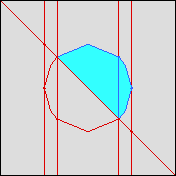
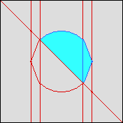

Although currently not developed in a way that's easy to use or
fast, QEPCAD is able to produce eps-file plots of CADs of
2-dimensional space. It seems like something people might like
to have, so I offer it "as is".
The Basic Command Once QEPCAD has constructed a CAD of
2-space (usually you'd see the solution prompt, though
possibly still the choice prompt) you can produce an
eps-file plot with the command
p-2d-cad xmin xmax ymin ymax
stride filename [z|Z|c|C]
The result is that a file named filename is created,
which gives a plot in eps-format of the region
[xmin,xmax]x[ymin,ymax].
The plot is produced by analyzing the topology of the CAD, then
sweeping through from left to right and in increments of
stride adding points to the model of the CAD. This
doesn't change the topology of the model, it just makes the
picture look prettier. In these plots where the view is
[-2,2]x[-2,2], the stride varies from
2.5 to 0.25 to 0.025:
   There are some optional paramters:
There are some optional paramters:
- z turns off the display of dots at 0-dimensional cells, Z
turns it on (which is the default)
- c turns off color display, using grayscale instead, C turns
it on (which is the default).
What to Do With the eps-file
If you're not familiar with eps-files, you may not know what to
do or how, so:
- View the file using, for example,the
gv
utility.
- Convert to a gif-file using the
pstogif
utility.
- Convert to a pdf-file using the
epstopdfutility.
- Include in, for example, a latex document.
While it may be pretty unappetizing to some people, you can open
up the eps file in any text editor and make some changes if you
don't like what I did. For example, if you don't like the colors,
you can edit the block:
%% This defines some default colors.
/DarkTrue { 0.2 0.4 1.0 setrgbcolor } def
/LightTrue { 0.2 1.0 1.0 setrgbcolor } def
/DarkFalse { 0.8667 0 0 setrgbcolor } def
/LightFalse { 0.8667 0.8667 0.8667 setrgbcolor } def
that appears near the top of the eps-file. Just stick in your own
rgb values (I chose these randomly!).
QEPCAD account {Prof. Brown}
Last modified: Tue Jul 30 10:30:40 EDT 2002